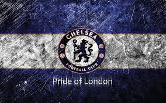

Chelsea Football Club
A Few Facts About Chelsea Football Club
 
Chelsea Football Club is a professional football club based in London, England, that competes in the Premier League, the highest tier of English football. Wikipedia
Chelsea, along with Arsenal, were the first clubs to play with numbered shirts. The Blues wore them during their game against Swansea City in August 1928.
Chelsea became the first British side to field an entirely foreign starting line-up in a Premier League match – against Southampton in December 1999.
- Manager:Maurizio Sarri
- Arena/Stadium: Stamford Bridge
- Founded: 10 March 1905
- The club is owned by russian billionare Roman Abramovich
- The club's record for the most expensive transfer fee for a goalkeeper for is $70million for Kepa Arrizabalaga
- The club's record for the most expensive transfer fee for a striker is $75million for Alvaro Morata
- The most skillful player in the club's history is Eden Hazard
- The Ivorien striker Didier Drogba is the most prolific striker in the history of the club
- The English midfielder Fank Lampard has the highest goal tally for the club
- The English defender and former captain of the England national team John Terry is the player with the most apperances for the club
- The Nigerian midfielder John Obi MIkel was a great player and servant for the club
- The Portuguese tactician Jose Mourinho was the manager to coach the club to most of its domestic titles
- In 2012 in munich against Bayern Munich the club won its first and only Champions league trophy till date
Facts about the top 3 PLayers in Chelsea Football Club
- Eden Hazard : He is a belgian attacking midfielder , he was born on the 1st of July 1991 and has a height of about 1.73. Eden is very skillfull player who also a great balance and finishing ability. He is the first choice penalty takerV
- Ngolo Kante : He is a french defensive midfielder, he was born on the 26th of March 1991 , has a height and weight of 1.68m and 72kg respectively
- Cesar Azplicueta : He is a spanish defender , captain of the club ,he was born on the 28th of August 1989 and has a height of 1.78m